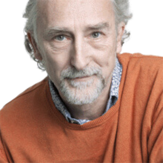
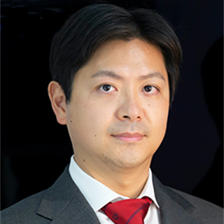
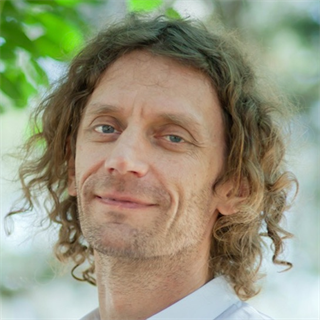
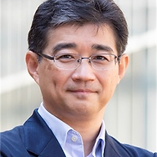
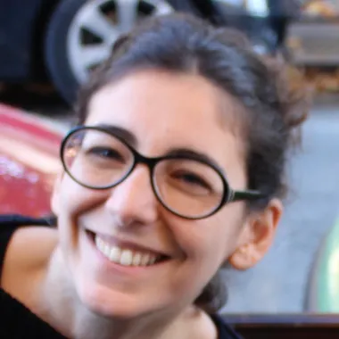
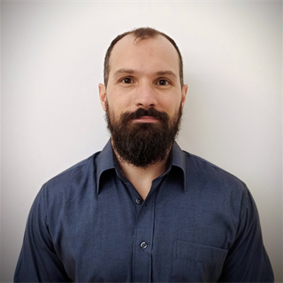
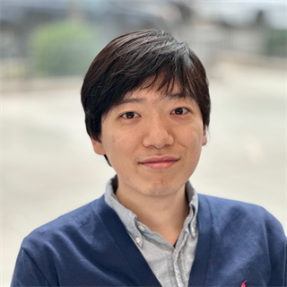

Computing Life: Supercomputing and AI for Biology
A conversation between Europe and Japan empowered by agentic research
27–28 January 2027
Abstract deadline December 20, 2026 Registration deadline January 15, 2027
General Information
AI and high-performance computing (HPC) are changing the life sciences, from reading genomes and designing proteins to simulating cells and discovering drugs. Making the most of them requires biologists and computer scientists to work together across institutions and borders. This two-day symposium brings together researchers from Japan and Europe to share their latest work and discuss what comes next for AI-driven biology.
The programme includes four keynotes, invited talks from European and Japanese researchers, talks selected from an open call, a poster session, and a round table on Europe–Japan collaboration in AI for science. Topics range from cancer genomics and single-cell analysis to protein design, drug discovery, cell simulation and whole-body imaging. We welcome researchers at all career stages, as well as policymakers and industry representatives, including from pharmaceutical companies. Remote participation is available.
The symposium is jointly organised by the Institute for Protein Research (IPR), Osaka University; RIKEN; JST FOREST; and the Barcelona Supercomputing Center (BSC), home to the MareNostrum 5 supercomputer. It is co-hosted by JST ARiSE and supported by the EuroHPC HANAMI project, which strengthens research and HPC cooperation between Europe and Japan.
- Dates
- Wednesday 27 – Thursday 28 January 2027
- Venue
- Ito Hall, Ito International Research Center, The University of Tokyo (Hongo)
- Format
- Hybrid: onsite and online
- Audience
- Open to all (Researchers and industry professionals).
- Hosts
-
- Barcelona Supercomputing Center (BSC)
- Institute for Protein Research (IPR), The University of Osaka
- JST FOREST (Fusion Oriented REsearch for disruptive Science and Technology)
- RIKEN
- Co-host(tentative): JST ARiSE (AI to Redesign Scientific Exploration)
- Fee
- Free
Speakers
Keynote speakers
-

Alfonso ValenciaBarcelona Supercomputing Center (BSC) · Spain
Director, Life Sciences Department -

Etsuo SusakiJuntendo University · Japan
Professor -

Emmanuel Barillot TBCInstitut Curie · France
Director -

Seiya ImotoThe University of Tokyo · Japan
Professor
Confirmed speakers
-
Anaïs BaudotMMG, Marseille Medical Genetics · France
Researcher -

Laurence CalzoneInstitut Curie · France
Research engineer -
 Jose CarbonellBarcelona Supercomputing Center (BSC) · Spain
Jose CarbonellBarcelona Supercomputing Center (BSC) · Spain
Established Researcher -

Davide CirilloBarcelona Supercomputing Center (BSC) · Spain
Leading Researcher -
Alba JenéBarcelona Supercomputing Center (BSC) · Spain
Scientific Coordinator -
 Kenji KamimotoThe University of Osaka · Japan
Kenji KamimotoThe University of Osaka · Japan
Professor -
 Ryosuke KojimaRIKEN Center for Biosystems Dynamics Research · Japan
Ryosuke KojimaRIKEN Center for Biosystems Dynamics Research · Japan
Team Director -
 Rieko SakuraiRIKEN · Japan
Rieko SakuraiRIKEN · Japan
Research Fellow -
 Shunsuke SumiThe University of Tokyo · Japan
Shunsuke SumiThe University of Tokyo · Japan
Assistant Professor -

Kotaro TsuboyamaThe University of Tokyo · Japan
Associate Professor -
 Miguel VázquezBarcelona Supercomputing Center (BSC) · Spain
Miguel VázquezBarcelona Supercomputing Center (BSC) · Spain
Group Leader -
 Masanori YoshinagaKyoto University · Japan
Masanori YoshinagaKyoto University · Japan
Assistant Professor
Program
The program is currently being planned. Details will be announced in due course.
Registration
Attend
Participation is free. Advance registration is required for both onsite attendance and online viewing. Please register through the Google Form by January 15, 2027.
Lunch will not be provided. Food and drink are not permitted inside Ito Hall.
Call for Presentations
We welcome abstract submissions from symposium participants. Participants who wish to present should submit an abstract of up to 400 words through the Google Form by December 20, 2026. Submission instructions will be provided in the form.
Biology-focused abstracts are welcome, including work that does not currently use AI but may benefit from future collaboration with AI researchers.
Poster board size: 240 cm (height) × 90 cm (width).
Recommended poster size: A0 portrait (84.1 cm × 118.9 cm).
Poster presentation is the standard format. A limited number of abstracts may be selected for oral presentation. Oral presentations are 15 minutes including Q&A. Requesting an oral presentation does not guarantee selection; abstracts not selected for oral presentation will be presented as posters.
Access
Ito Hall, Ito International Research Center
The University of Tokyo
7-3-1 Hongo, Bunkyo-ku, Tokyo, Japan
By subway
- Hongo-sanchome · Toei Oedo Line6 min walk
- Hongo-sanchome · Marunouchi Line8 min walk
- Todaimae · Namboku Line12 min walk
- Yushima · Chiyoda Line15 min walk
From Ochanomizu Station (JR Chuo and Sobu lines), take the Marunouchi Line to Hongo-sanchome.
Organizing committee
- Eriko ItoJapan Science and Technology Agency (JST)
- Alba JenéBarcelona Supercomputing Center (BSC)
- Mariko OkadaInstitute for Protein Research, The University of Osaka
- Shunsuke ShimobayashiKyoto University · FOREST Researcher
- Makoto TaijiRIKEN
- Masanori YoshinagaKyoto University · FOREST Researcher
Acknowledgements
HANAMI is funded by the European High Performance Computing Joint Undertaking (EuroHPC JU) under the European Union’s Horizon Europe framework programme for research and innovation (Grant Agreement No. 101136269).
The views expressed are those of the organizers and do not necessarily reflect those of the European Union or EuroHPC JU. Neither the European Union nor the granting authority can be held responsible for them.